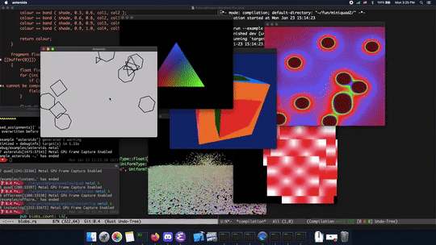
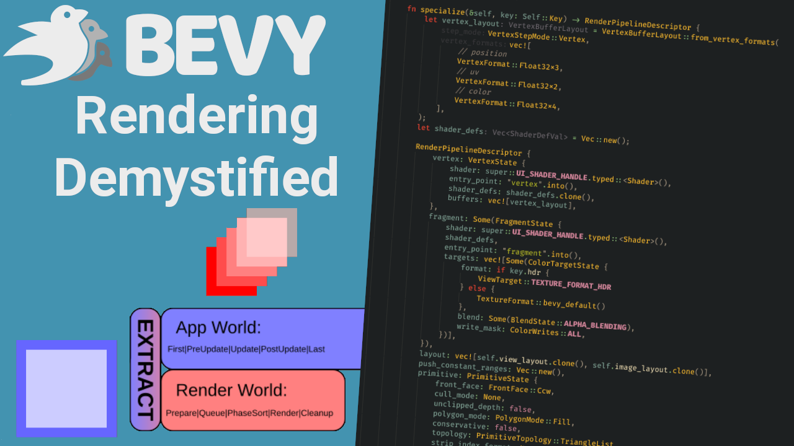

This Month in Rust GameDev #47 - June 2023
Welcome to the 47th issue of the Rust GameDev Workgroup's monthly newsletter. Rust is a systems language pursuing the trifecta: safety, concurrency, and speed. These goals are well-aligned with game development. We hope to build an inviting ecosystem for anyone wishing to use Rust in their development process! Want to get involved? Join the Rust GameDev working group!
You can follow the newsletter creation process by watching the coordination issues. Want something mentioned in the next newsletter? Send us a pull request. Feel free to send PRs about your own projects!
- Announcements
- Game Updates
- Engine Updates
- Learning Material Updates
- Tooling Updates
- Library Updates
- Other News
Announcements
Rust GameDev Meetup #27
The 28th Rust Gamedev Meetup took place in June. You can watch the recording of the meetup here on Youtube.
The schedule:
- Blade by @kvark
- Graphite by @Keavon
- Digital Extinction by @Indy2222
- Bevy Jam #3 Games by @AngelOnFira
The meetups take place on the second Saturday of every month via the Rust Gamedev Discord server and are also streamed on Twitch.
Game Updates
Flesh
 Intro
Intro
Flesh by @im_oab is a 2D-horizontal shmup game with hand-drawn animation, an organic/fleshy theme and a unique story. It is implemented using Tetra. The game's development has finished and will be released soon. The last update before release includes:
- Intro/Ending/End credits animation.
- Add a variant version of Conway's Game of Life as background.
- Improve effect in the gameplay with distortion shaders.
- Update the demo build with improved graphics and performance.
Space Frontiers
 Render achieved with dynamic point lights.
Render achieved with dynamic point lights.
Space Frontiers (GitHub, Discord, Twitter, Reddit, Steam Group) by Starwolves is an online moddable sci-fi action RPG community game simulating space (and spaceships) in 3D.
By the end of last year, the client was made with Godot. Shortly after that the decision was made to replace the Godot project with a Bevy Engine client.
Rust and Bevy are now used for both server and client. There are a lot of advantages such as sharing libraries and neat code replication, reducing code overhead. In fact, both the server and client are now developed in the same virtual workspace.
The client includes a new camera perspective from top-down isometric to 1st person. A new 3D dynamic gridmap framework has been successfully implemented in ECS. The prototype includes an in-game map editing tool with the ability to export to file. Inspired by the videogame "System Shock". There is a recently uploaded showcase video.
The project is commercial, open-source and has a proprietary license. There is a milestone for a license change to free open-source.
Starwolves.io Bulletin Board was launched half a year ago. There are 25~ registrants left that can receive a permanent unique forum group/title.
Discussions: StarWolves.io Bulletin Board
Digital Extinction
 Building Placement in Digital Extinction
Building Placement in Digital Extinction
Digital Extinction (GitHub, Discord, Reddit) by @Indy2222 is a 3D real-time strategy game made with Bevy.
The most notable updates are:
- nightly versions are automatically built and published on de-game.org and elsewhere,
- significant progress has been made on multiplayer and networking,
- animated arrows on terrain are displayed for selected factories, indicating the path from the units' spawn points to their delivery locations,
- semi-transparent square markers are drawn on the terrain around selected buildings,
- health bars are briefly displayed above units and buildings when they take damage or their health changes,
- the implementation and design of the “Energy” have started to take shape,
- the head-up display (HUD) shows the total battery charge and the number of selected units and buildings,
- the main theme song plays in a loop, the volume of the music can be configured,
- the aspect ratio of the minimap matches that of the game map,
- the option to invert camera zooming has been added to the configuration,
- the documentation has been converted to mdBook.
See gameplay screen recordings on YouTube.
A more detailed July update is available here.
Tribes
Tribes (working title) by @uvizhe is a turn-based strategy game about tribes of hunters and gatherers. It's being developed using Bevy.
The first devlog introduces the game, outlines its current state and future plans, accompanied by some thoughts from the developer.
Discussions: /r/rust_gamedev, Twitter, Mastodon
Way of Rhea
Way of Rhea is a puzzle game with hard puzzles but forgiving mechanics being produced by @masonremaley in a custom Rust engine. You can support development by checking out the free demo and wishlisting on Steam or signing up for the mailing list!
Recent updates:
- Puzzle design and layout complete!
- Continued work on polish, working towards a closed beta
- Work continued on native Linux & Steam Deck port, the port is unfinished but playable
- Increased staff throw velocity to make it easier to throw staves off ledges
- Various performance improvements (separate spatial hash for interactive objects)
- Way of Rhea will be part of the Cerebral Puzzle Showcase August 3rd-7th!
Veloren
Veloren over the years
Veloren is an open world, open-source voxel RPG inspired by Dwarf Fortress and Cube World.
In June, Veloren prepared for an upcoming release coming in July. Work included various fixes, charms, one-way walls, ip address anonymization in logs, the addition of the frost gigas boss in game, savanna hut updates, plant creatures, cyclops, and much more.
Ongoing work is happening on ship movement, pet commands, Terracotta ruins, dwarven quarry, coastal towns, clifftown rework, and axe skills. Work is happening to add physics interactions that increase your height as you're gliding. This includes thermal and ridge lifts.
June's full weekly devlogs: "This Week In Veloren...": #211, #212.
Engine Updates
macroquad
 Macroquad examples rendered by Metal API
Macroquad got ported to miniquad-0.4, supporting Metal on Mac and IOS.
On the surface all the macroquad API stayed exactly the same, but with
use macroquad::miniquad::* being such a breaking change - major version
number was bumped. Major version bump made possible to fix a few
long-lasting issues, check the full changelog
for all the changes.
godot-rust

In the last few weeks of gdext development, the GDExtension API breaks in Godot's recently released 4.1 version. Migration is mostly done, several FFI bugs have been addressed on the way.
The godot-rust book now has a "Hello World" tutorial + guides on compatibility and selecting Godot version.
Noteworthy features:
- Vector swizzling
- Signals with parameters
- Rust-native APIs for Rect2, Aabb, and Plane
- ToVariant/FromVariant derives
- Godot native structures
Learning Material Updates
Bevy Rendering Demystified

@logicprojects published a video covering the details of Bevy's rendering systems. Specifically, he covered the engine's internal implementation of UI Rendering to show how data flows from the ECS world down to the final wgpu draw calls.
Procedural Trees in Ambient
@mebyz authored a set of articles "building mmo-ready procedural trees using Ambient engine". The three (1, 2, 3) posts cover a week's worth of explorations into simple pseudo-random procedural ecosystem generation (trees, mushrooms, etc) system/strategy for Ambient.
Tooling Updates
Rerun
Rerun (Discord, Github) is an open-source SDK for logging complex visual data paired with a visualizer for exploring that data over time. While its primary focus is on robotics and computer vision, it can be useful for all kinds of rapid prototyping & algorithm development.
v0.7.0 is out now, but it turned out a little bit smaller:
A few of the biggest highlights:
- Much more powerful transformation logging
- any affine transforms works now!
- supports many more formats and shows them in the viewer as-is
- Better color mapping range detection for images and tensors
- Add support for motion JPEG via the new jpeg_quality parameter to log_image
- Many small improvements to samples & documentation
There's a growing community on Discord waiting for you to join in case you have any questions, comments or just want to follow the latest development. The Github project is MIT/Apache licensed and open to contribute for everyone, be it with suggestions, bugs or PRs.
Library Updates
posh
posh is a crate that seamlessly integrates a graphics library with an
embedded functional shading language. It is a proof of concept that aims to
demonstrate that graphics programming can be both type-safe and ergonomic.
With posh, shaders are written in plain Rust (with some caveats). Procedural
macros are only required for defining custom vertex and uniform types.
The core component of posh is the Program<U, V, F> type, which acts as a
bridge between the shading language and the graphics library. This type
represents a compiled shader and serves as the entry point for draw calls. By
explicitly carrying the types U (uniform interface), V (vertex shader
interface), and F (fragment shader interface), posh enables static
verification, ensuring that the data provided in draw calls matches the shader's
signature.
For simplicity, posh currently targets OpenGL ES 3.0. Although it is an
experimental project, its authors hope to inspire the community to further
explore how static typing can elegantly bridge the gap between host code and
shader code.
For more details, check out the examples or the authors' blog post.
Boytacean
Boytacean by @joamag is a web-based Game Boy Color emulator (and library) written in Rust.
Major features include:
- Full Game Boy and Game Boy Color emulation.
- Web (using WebAssembly) and SDL frontends.
- Ultra-fast performance.
- Accurate PPU emulation.
- Game Boy Printer emulation.
- and many others...
Other News
- Other game updates:
- Idu is a game about growing simulated plants, recent updates include addition of a GPU particle system.
- Nanovoid is a 2D tactical space shooter game, most recent features have been added to the ship editor.
- Cells is a singleplayer game inspired by agar.io.
- MS80 is a game about scavenging parts and creating things with them to survive alien attacks. MS80 now does basic simulation of thermodynamics.
- Maginet updated their game interface and debuted the editor update!
- Combine And Conquer new release fixes issues with item rendering.
- rust-drive-ai is a self driving AI simulation game built in span of 30 days that uses the Bevy engine. In addition, under the hood the cars are controlled using neural networks and trained by a genetic algorithm.
- The Station is a brand new NASA-punk survival game.
- Turtletime is a multiplayer competitive turtle game built using the Bevy and Matchbox.
- Tiny Glade updated path detailing.
- Fish Folk is collection of arcade style multiplayer games where you dive deep in the ocean!
- Other learning material updates:
- Game Dev Graphics posted a series of 3D graphics tutorials in Rust from scratch.
- Maciej Główka brings updates for map generation to his Bevy roguelike tutorial.
- Learning Game Dev brings a third edition to their tutorials with building a platformer with Bevy.
- Other engine updates:
- Bitang is a new framework for demoscene productions.
- Other library updates:
That's all news for today, thanks for reading!
Want something mentioned in the next newsletter? Send us a pull request.
Also, subscribe to @rust_gamedev on Twitter or /r/rust_gamedev subreddit if you want to receive fresh news!